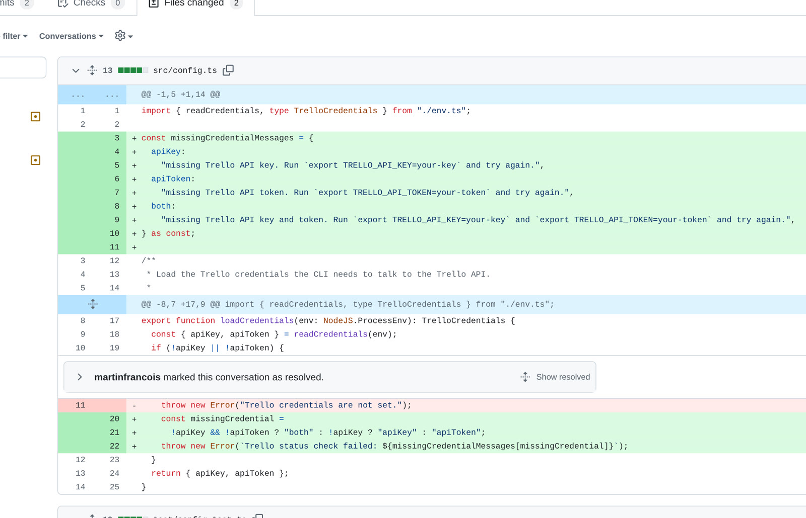

From Trello card to merged pull request
A real run: you plan work in Trello, Codex implements it, and Symphony keeps the handoff moving.
Plan work where your team already plans work.
A task starts as an ordinary card on a real Trello board.

Describe the task like you would for a teammate.
The card title and description are the whole prompt.

Move the card to Ready for Codex.
One drag tells Symphony this task is ready to start.
Symphony picks it up automatically.
No human dragged this one: the worker claims the card and starts Codex.

Progress stays visible on the Trello card.
Codex keeps one workpad comment current while it implements the task.
The PR is ready for review.
Symphony moves the card to Human Review and links the pull request.

Review the PR and leave one clear comment.
The review comment is tied to the real diff Codex produced.

Move the card back and Codex continues.
Your review comment becomes the next Codex task on the same card.
Codex reads the review and updates the PR.
The workpad records the rework, so the card keeps the whole story.
- Review feedback: report whichever credential is actually missing.
- Updated
src/config.tsfor missing API key, token, or both. - Added tests for every missing-credential case.
- Passed:
npm run typecheckandnpm test.
Comment answered. Thread resolved.
Codex replies on the same review thread with what changed.

Happy with the PR? Move the card to Merging.
Dropping the card here tells Symphony to merge the pull request.

Symphony merges the pull request.
No IDE, no terminal: the merge happens from the board.

The card lands in Done.
The board shows the task as merged and finished.

Start from your phone. Review from your laptop.
It is the same Trello board everywhere, so planning a Codex task from a phone is just adding a card.

You plan work in Trello. Codex implements it. Symphony keeps everything moving.
From phone to laptop, from card to merged PR. No IDE required. No CLI babysitting.
clarify-missing-trello-token-error.src/config.tswith a clearer status-check error.npm run typecheckandnpm test.